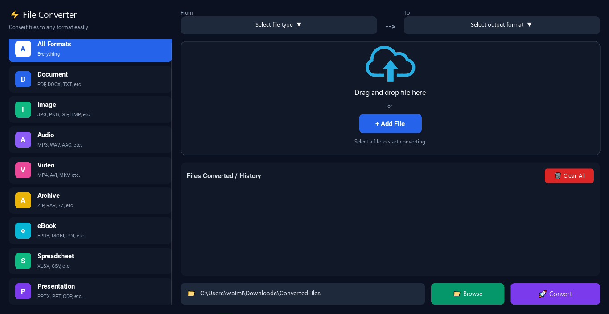

Python
Application Development
I enjoy building useful software applications with Python, Kivy and modern web technologies. Explore my work, skills and projects below.
I am an IT student, passionate about software development, problem solving and creating practical solutions. I enjoy learning new technologies and turning ideas into real-world applications. My goal is to become a skilled developer and contribute to innovative projects in the tech industry.
Learn MoreB.Sc. in Information Technology
(2nd Year)
Software Development,
App Design & Problem Solving
Your City, Country
A combination of programming languages, frameworks and tools.
Application Development
Cross-Platform UI
Android Development
Programming Basics
Performance & Algorithms
Web Development
A selection of my recent projects. Click to explore the source code.

A powerful media downloader with format selection, download management and FFmpeg audio/video merging.

A modern weather website with search, forecasts, weather maps and daily tips using the Open-Meteo API.

Multi-Format Converter is a tool that converts files between different formats quickly and easily, supporting various file types such as images, videos, audio, and documents.
Have a project idea, collaboration opportunity, or just want to say hi? Feel free to reach out!